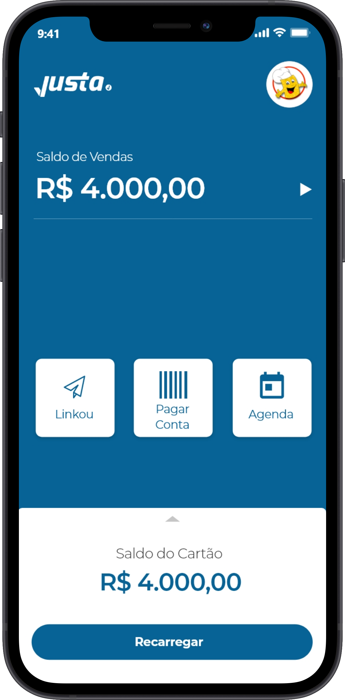
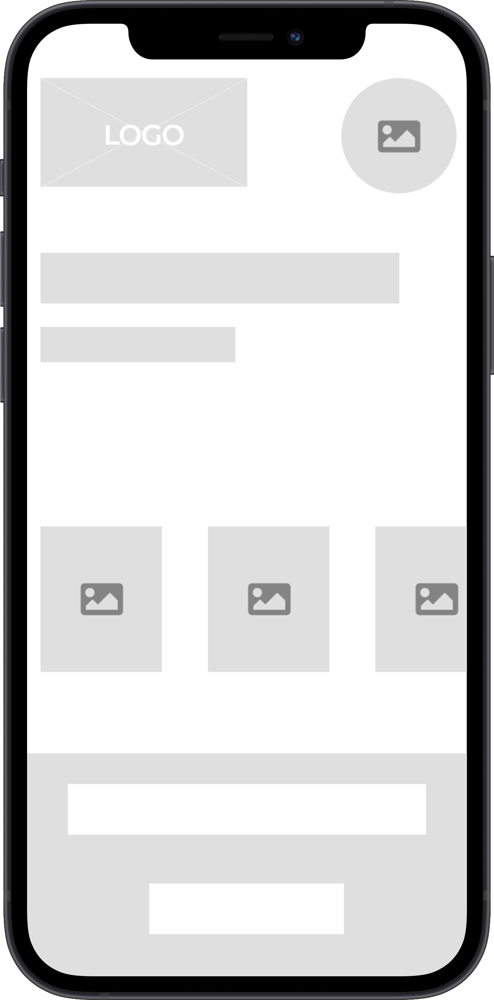

Passe o mouse
Sobre mim
Olá, meu nome é Marcelo Henrique sou designer UX/UI. Atualmente trabalho na criação de produtos digitais, transitando por pesquisas e jornadas para o levantamento do problema, até a criação da solução.
Senai
Técnico em Informática & Desenvolvimento de Sistemas
Foi no SENAI onde a paixão pela tecnologia surgiu. Durante o curso, passei por diversas etapas do desenvolvimento de um projeto real, sendo elas:
- Metodologias Ágeis
- UX/UI
- Desenvolvimento Frontend
- Desenvolvimento Backend
- Desenvolvimento Mobile
Space Needle Tecnologia
Designer UX/UI
Na Space Needle tive o prazer em trabalhar com diversos clientes, entender os seus problemas e ajuda-lo a levar a tecnologia através de produtos digitais para os seus usuários.
Justa pagamentos e serviços financeiros
Product Designer
Com a Justa tive a experiência em me aproximar do usuário final, sentir o que ele sente, ouvir e entender de forma mais próxima. Trabalhar com o próprio produto é um lado da moeda diferente e aprendi muitas coisas, até fui para a rua testar os produtos ao lado do usuário e isso é uma experiência única, um jeito diferente de ver o seu trabalho.
Cases
Aqui se concentra o trabalho da minha vida, todos os cases reais e de estudos que me orgulho muito durante essa jornada que só está começando. O objetivo da documentação dos projetos é aprofundar o máximo nos processos e os seus resultados, respeitando qualquer direito autoral e moral sobre os citados

